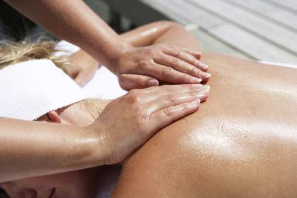

Om Elisabeth Care
Elisabeth Care är skönhetssalongen för dig som söker en liten, varm och framförallt personlig salong. Vi erbjuder professionell massage, hårvård och skönhetsbehandlingar. Vi anpassar gärna behandling och tid efter dina behov och önskemål.Ita - Terapeut och stylist
Ita Skoog är certifierad massageterapeut sedan mer än tio år tillbaka. Hon har mångårig erfarenhet av att jobba med massage för ökat välbefinnande. Ita jobbar ofta ute hos företag, kommun och landsting i Borås-trakten med att massera personal som en del i verksamhetens friskvård. Se Massage på jobbet.Ita är även spaterapeut samt certifierad fransstylist och driver salongen Elisabeth Care i Brämhult. Där erbjuder hon, förutom massage, ett stort utbud av skönhetsbehandlingar.
Matilda - Frisör
Sedan 2015 så finns även frisören Matilda i salongen, som erbjuder fantastisk hårvård.